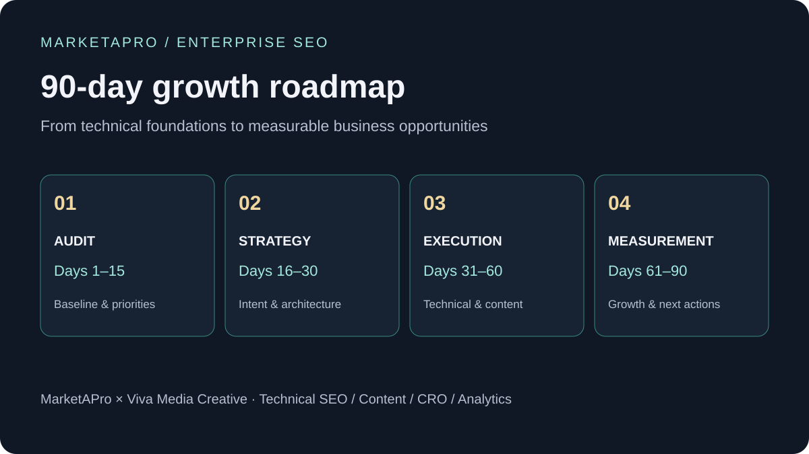

شركة SEO في مصر تدير النمو العضوي للشركات الكبرى من الاستراتيجية إلى التنفيذ
تقدم Viva Media Creative عبر MarketAPro خدمات تحسين محركات البحث للشركات والمؤسسات التي تريد زيادة حصتها من الطلب العضوي وتحويل موقعها إلى قناة لتوليد العملاء والمبيعات. نجمع بين تحليل السوق، والسيو التقني، وهندسة المحتوى، وتطوير صفحات الخدمات، وتحسين التحويل والقياس، ضمن خطة ترتبط بأهداف الإدارة التجارية.
إذا كنت مدير تسويق في شركة صناعية أو مجموعة عقارية أو مؤسسة طبية أو علامة تجارية تعمل في عدة أسواق، فأنت تحتاج شريكًا يستطيع التعامل مع تعقيد موقعك وتنسيق العمل مع فرق التطوير والمحتوى والمبيعات. يبدأ مشروعنا بفهم ما تبيعه شركتك، ومن يتخذ قرار الشراء، وكيف يصل إلى الموقع، وما الذي يحتاجه قبل طلب عرض السعر أو حجز اجتماع.
نخدم الشركات التي تستهدف العملاء في القاهرة والجيزة والإسكندرية والمدن الصناعية وباقي المحافظات المصرية، وكذلك الشركات المصرية التي تتوسع في السعودية والإمارات والأسواق الدولية. نحدد خطة البحث وفق السوق الذي تعمل فيه الشركة واللغة التي يستخدمها مشتروها، مع تنسيق التنفيذ عن بُعد مع فرقها.
يمكنك الاطلاع على خدمات SEO & Growth لدى Viva Media Creative، ثم طلب استراتيجية لموقعك تشمل فرص النمو والأولويات التقنية والتجارية ومؤشرات النجاح.
حوّل موقع شركتك إلى أصل تجاري يعمل طوال العام
شاركنا رابط الموقع وأهم خطوط الأعمال والأسواق المستهدفة. نحدد معك المسار المناسب لتطوير الظهور والتحويل.
اطلب استراتيجية SEO مخصصة لشركتك ↗لماذا تختار Viva Media Creative لإدارة SEO لشركتك في مصر؟
تحتاج الشركات الكبرى إلى شريك يربط قرارات البحث بالنتائج التي تهم الإدارة: فرص البيع، تكلفة اكتساب العملاء، جودة الاستفسارات، ونمو الإيرادات. لهذا نعمل على الموقع باعتباره منظومة متكاملة تبدأ من الظهور أمام العميل المناسب وتنتهي بخطوة تجارية قابلة للقياس.
استراتيجية مرتبطة بقطاعك وبعملية البيع
في الشركات الصناعية يبدأ القرار من المواصفات الفنية والقدرة على التوريد، وفي العقارات من الموقع والمشروع وخيارات السداد، وفي الخدمات المهنية من الخبرة والثقة. نترجم هذه الفروق إلى صفحات بحث ومحتوى يجيب عن احتياجات المشتري في كل مرحلة.
تنسيق السيو مع التطوير والتسويق والمبيعات
نحدد متطلبات التنفيذ بما يتناسب مع بنية الموقع وفريق العمل، ونحوّل نتائج التدقيق إلى مهام قابلة للتنفيذ والمراجعة. يستطيع فريق التقنية معرفة التغيير المطلوب، وفريق المحتوى معرفة الصفحات ذات الأولوية، وفريق المبيعات فهم مصدر الاستفسارات وجودتها.
محتوى يعكس خبرة الشركة الحقيقية
نعمل على إبراز خدمات الشركة ومنتجاتها وخبرائها وشهاداتها المتاحة ومشاريعها المنشورة، ونعطي صفحاتها التجارية ما يحتاجه الباحث لاتخاذ قرار. المحتوى المؤسسي يحتاج مراجعة أصحاب الخبرة، خصوصًا عند الحديث عن معايير صناعية أو خدمات مالية أو صحية.
قياس يناسب قرارات الإدارة
تتضمن منظومة SEO & Growth تقارير للظهور والنقرات والصفحات التجارية والتحويلات، مع أولويات المرحلة التالية. عندما تتوفر بيانات CRM نستطيع تصميم إطار قياس يربط طلبات التواصل بفرص المبيعات، بالتنسيق مع فريق شركتك.
تضم أعمال Viva Media Creative المنشورة مشاريع في هيكلة المتاجر والسيو المحلي ومحتوى B2B ومراكز المعرفة وانتقال المواقع. وتخدم هذه الخبرات الاحتياجات المختلفة للمؤسسات التي تبحث عن فريق يجمع التخطيط والتنفيذ والتحليل.
خدمات تحسين محركات البحث SEO للشركات الكبرى في مصر
تصمم استراتيجية SEO المؤسسية حسب حالة الموقع، وقطاعات العمل، والمنافسة، والقدرة على تنفيذ التحسينات. نرتب الخدمات حسب أثرها على الصفحات التي تقود إلى الطلب التجاري، مع إعطاء الأولوية للمشكلات التقنية التي تعيق الوصول إلى هذه الصفحات.
| الخدمة | مخرجات العمل | القيمة للشركة |
|---|---|---|
| Enterprise SEO Audit | تدقيق القوالب والفهرسة والمحتوى وخريطة أولويات | قرارات تطوير مبنية على حالة الموقع |
| Technical SEO | تحسين الوصول والفهرسة والروابط والقوالب والأداء | حماية الصفحات التجارية وتسهيل اكتشافها |
| Keyword & Intent Research | خريطة طلب بحسب القطاع واللغة ومرحلة الشراء | توسيع الظهور أمام العملاء المناسبين |
| On-Page SEO | تحسين الصفحات التجارية والعناوين والمعلومات والربط | وضوح العرض وزيادة فرص التواصل |
| Content Strategy | صفحات خدمات ومحتوى تخصصي ومجموعات موضوعية | إبراز الخبرة ودعم قرار الشراء |
| International SEO | هيكلة اللغات والأسواق وإشارات hreflang | دعم التوسع والتصدير |
| Local SEO | صفحات فروع وخدمات ومعلومات النشاط المؤهلة | اكتشاف الفروع واستفسارات المناطق |
| CRO & Landing Pages | مسارات طلب عرض سعر ونماذج وتحسين التحويل | الاستفادة من الزيارات الحالية |
| Tracking & Reporting | خط أساس ومؤشرات أداء وخطة تحسين | وضوح قيمة الاستثمار |
تتداخل هذه الخدمات: تحسين الفهرسة وحده لا يكفي إذا كانت صفحة الخدمة لا تجيب عن أسئلة المشتري، وكتابة المحتوى لا تحقق قيمتها إذا كانت الصفحة معزولة عن الهيكل الداخلي. لذلك نضع خريطة متكاملة تربط طلب البحث بالصفحة والتجربة والتحويل. يمكن استكشاف خدمات تحسين محركات البحث لدى MarketAPro لمعرفة تفاصيل مسارات التنفيذ.
تدقيق SEO للمواقع الكبيرة: نقطة البداية لاستراتيجية نمو مؤسسية
في موقع مؤسسي يضم آلاف الروابط أو عدة نطاقات فرعية، لا يكفي فحص الصفحة الرئيسية وبعض الصفحات العشوائية. يبدأ التدقيق من تعريف الصفحات المهمة تجاريًا والقوالب التي تولدها، ثم مراجعة إمكانية الوصول إليها وفهرستها واتساق إشاراتها. نربط الفحص بنتائج البحث والزيارات وطلبات التواصل لتحديد أين توجد أكبر فرصة للنمو.
تحليل بنية الموقع والقوالب
نراجع تقسيم الموقع إلى قطاعات وخدمات ومنتجات ومناطق ولغات، ونحدد الصفحات اليتيمة والروابط العميقة والتكرار ومشكلات التنقل. يساعد تحليل القالب على معالجة خلل متكرر في مجموعة كاملة من الصفحات بدل تعديل كل رابط يدويًا. كما نراجع خرائط XML وروابط التنقل وتصنيف الصفحات حسب أهميتها.
تحديد الفجوات بين الصفحات المهمة والفهرسة
نفحص استجابات الخادم وإشارات canonical وnoindex والتحويلات وصفحات الخطأ، ونقارن عينات من الصفحات عبر بيانات الزحف وتقارير Search Console. إذا كانت صفحة ذات قيمة تجارية غير مفهرسة، ندرس السبب ونحدد التغيير المناسب ثم نتابع إعادة المعالجة. راجع دليل تشخيص أخطاء الفهرسة لمزيد من التفاصيل.
تدقيق المحتوى والطلب التجاري
نحدد الصفحات التي تستقبل انطباعات دون نقرات، والصفحات التي تجذب زيارات غير مناسبة، والخدمات التي تحتاج صفحة مخصصة، والمحتوى المتكرر الذي يتنافس على النية نفسها. ندرس السوق والعبارات التجارية ونرسم العلاقة بين الخدمة والسؤال والصفحة ومؤشر الأداء.
مخرج التدقيق ليس قائمة أخطاء طويلة، بل برنامج أولويات يحدد الأثر المتوقع من كل مجموعة أعمال، والاعتماد على فرق التطوير أو المحتوى، وطريقة التحقق بعد التنفيذ. يمكن بدء التعاون بالتدقيق ثم توسيع نطاق العمل وفق النتائج.
شركة سيو تقني في مصر: Technical SEO للمواقع المؤسسية والمعقدة
نساعد فرق الشركات على جعل الصفحات المهمة متاحة لمحركات البحث وقابلة للاستخدام. يشمل العمل تشخيص مشكلات الفهرسة والزحف، تحسين القوالب، إدارة التحويلات، مراقبة الأداء، وتطوير الروابط الداخلية، حسب بنية النظام والصلاحيات المتاحة.
| المشكلة | التنفيذ المقترح | التحقق |
|---|---|---|
| صفحات تجارية خارج الفهرس | مراجعة الإشارات والروابط وجودة الصفحة | فحص URL وتقارير الفهرسة |
| تكرار صفحات الفلاتر | سياسة روابط وإشارات مناسبة حسب القيمة | عينات زحف وتطابق canonical |
| روابط قديمة وأخطاء 404 | إعادة توجيه ذات صلة وإصلاح الروابط الداخلية | اختبار مسارات واستجابات HTTP |
| محتوى يعتمد على JavaScript | مراجعة HTML والعرض والوصول للمحتوى | فحص الصفحة المعروضة |
| بطء قوالب الخدمات والمنتجات | تحسين الصور والموارد وتنسيق عمل المطور | Core Web Vitals وقياس فعلي عند توفره |
| تعدد اللغات | ربط النسخ المتكافئة وخرائط وإشارات لغة | مراجعة hreflang وcanonical |
تختلف إدارة الزحف عن الفهرسة. نركز على ميزانية الزحف عندما تكون ذات أثر على موقع ضخم أو سريع التحديث، وفق إرشادات Google لإدارة الزحف. ونستخدم Core Web Vitals كجزء من فهم تجربة المستخدم، بالتوازي مع استقرار الخادم وجودة المحتوى. تتبع القياسات المختبرية والبيانات الميدانية يعطي صورة أوضح عن أداء القوالب على الأجهزة المختلفة.
في المشاريع التي تتطلب تغييرًا برمجيًا، نحدد مع فريق التطوير طريقة التطبيق والاختبار ومعايير القبول. ويمكن تنفيذ التحسينات على قالب أو مجموعة صفحات ثم توسيعها بعد مراجعة النتائج. هذا الأسلوب يحافظ على استقرار الموقع ويجعل التغييرات قابلة للتتبع.
إدارة انتقال موقع الشركة وإعادة تصميمه دون إهدار قيمة SEO
عند تغيير نظام إدارة المحتوى أو النطاق أو بنية الروابط، تصبح الزيارات العضوية المبنية عبر سنوات جزءًا من الأصول التي ينبغي حمايتها. ندمج استراتيجية SEO في مراحل التخطيط والتطوير والإطلاق، قبل أن تنتقل الصفحات إلى عناوينها الجديدة.
- جرد عناوين الصفحات القديمة وتحديد الصفحات التي تحمل الزيارات والروابط والتحويلات.
- بناء خريطة تحويل من الصفحات القديمة إلى الصفحات الجديدة الأكثر صلة.
- مراجعة النسخ التجريبية والروابط الداخلية والعناوين والفهرسة وخرائط XML وإشارات اللغة.
- التحقق من التحويلات والاستجابات والمحتوى على القوالب الأساسية قبل الإطلاق.
- متابعة الزحف والفهرسة والزيارات والتحويلات بعد الانتقال ومراجعة أي تغير غير متوقع.
تضم محفظة أعمال Viva مشاريع للانتقال التقني ومتابعة الفهرسة بعد الإطلاق. ويمكن تطبيق المنهج نفسه في مشاريع إعادة تصميم مواقع الشركات المصرية، مع مراعاة بنية كل موقع. اطلع على معرض مشاريع Viva، واطلب التنسيق معنا قبل اعتماد بنية موقعك الجديد.
تخطط شركتك لإطلاق موقع جديد؟
أشرك فريق SEO في مرحلة التخطيط حتى تبنى خريطة الانتقال والصفحات ذات الأولوية قبل الإطلاق.
اطلب استراتيجية SEO مخصصة لشركتك ↗استراتيجية الكلمات المفتاحية للشركات: كيف نصل إلى الباحث المستعد للتعاقد؟
تختلف رحلة البحث المؤسسي عن قرار شراء منتج بسيط. قد يبدأ مدير المشتريات بسؤال فني أو معيار جودة، ثم يقارن الموردين، ثم يبحث عن شركة تستطيع تنفيذ احتياجاته، قبل طلب عرض سعر. نحلل مراحل القرار ونبني لكل مرحلة صفحة أو محتوى يقود إلى الخطوة التالية.
| مرحلة القرار | مثال بحث توضيحي | الصفحة المناسبة | الإجراء المطلوب |
|---|---|---|---|
| اكتشاف المشكلة | حلول معالجة مياه المصانع | دليل تخصصي وصفحات حلول | استكشاف الخدمات |
| تحديد المتطلبات | مواصفات أنظمة معالجة المياه الصناعية | صفحة تقنية أو دليل اختيار | تحميل مواصفات أو طلب استشارة |
| مقارنة مقدمي الخدمة | شركة معالجة مياه صناعية في مصر | صفحة خدمة تجارية | طلب عرض سعر |
| التحقق من الخبرة | مشروعات معالجة مياه للمصانع | دراسة حالة أو معرض أعمال | التواصل مع فريق المبيعات |
| قرار الشراء | توريد وتركيب نظام معالجة المياه | صفحة خدمة ونموذج طلب | إرسال تفاصيل المشروع |
نوزع الكلمات على الصفحات حسب النية، ونراقب تداخلها في Search Console. عندما تظهر صفحتان للمطلب نفسه، ندرس اختلاف وظيفتهما وإمكانية تحسين التمييز أو الدمج أو الربط بينهما. الهدف أن يحصل كل باحث على الصفحة التي تلبي حاجته، وأن يفهم محرك البحث العلاقة بين خدمات الشركة ومحتواها.
نعتمد في بحث السوق المصري على اللغة التي يستخدمها العملاء فعلًا، بما فيها المصطلحات العربية والإنجليزية الشائعة في القطاعات التقنية والمهنية. ونبني صفحات مستقلة عندما يختلف المنتج أو الخدمة أو السوق أو مرحلة القرار بما يبرر صفحة مخصصة.
شركة SEO للشركات الصناعية والمصانع في مصر: جذب عملاء B2B مؤهلين
في الصناعة، قد تكون قيمة عقد واحد أكبر من قيمة آلاف الزيارات غير المؤهلة. يبحث المهندس عن المواصفات، ويبحث مدير المشتريات عن التوريد والاعتمادية، وتراجع الإدارة التجارية قدرة المورد على تنفيذ المشروع. نصمم صفحات الحلول لتخاطب هذه الأطراف وتتيح انتقالًا واضحًا من المعلومات الفنية إلى طلب عرض سعر.
للشركات العاملة في السادس من أكتوبر والعاشر من رمضان والسادات وبرج العرب وغيرها من المناطق الصناعية، ندرس الطلب المحلي وطلب التصدير كلًا على حدة. قد يستهدف مصنع في مصر مشتريًا محليًا باللغة العربية، وموزعًا في الخليج باللغة الإنجليزية، وشريكًا دوليًا يبحث عن تصنيف منتج أو مواصفة فنية. يساعد هذا التقسيم على بناء صفحات ذات قيمة تجارية بدل الاكتفاء بمحتوى عام عن الصناعة.
ما الذي نطوره في موقع المصنع أو المورد؟
- صفحات خطوط الإنتاج والحلول والمعدات حسب الاستخدام والقطاع.
- معلومات فنية ومواصفات وقدرات توريد موثقة من الشركة.
- صفحات للمشروعات المنشورة والأسواق التي تستطيع الشركة خدمتها.
- صفحات عربية وإنجليزية حسب احتياجات المشتري، وروابط إلى مواد المواصفات.
- نماذج طلب عرض سعر تستقبل متطلبات المشروع والقطاع والمنطقة.
نعمل مع فريق المبيعات على تحديد الاستفسار المؤهل: هل طالب التواصل يمثل شركة؟ هل لديه احتياج محدد؟ هل المشروع داخل نطاق التوريد؟ يمكن قياس هذه المعايير من خلال الحقول المناسبة في نموذج التواصل وCRM. عندها تصبح التقارير أكثر قيمة من عرض عدد الزيارات وحده.
استقطب مشترين وموزعين من محركات البحث
شارك خطوط الإنتاج والقطاعات التي تخدمها والأسواق المستهدفة لنحدد صفحات الحلول وفرص البحث ذات القيمة التجارية.
اطلب استراتيجية SEO مخصصة لشركتك ↗خدمات سيو لشركات التطوير العقاري والمجموعات العقارية في مصر
تتعدد صفحات العقارات بحسب المدينة والمشروع ونوع الوحدة ومرحلة التطوير. تحتاج المجموعة العقارية إلى هيكلة تتيح للباحث الانتقال من البحث عن المنطقة إلى المشروع، ثم إلى تفاصيل الوحدات وطريقة التواصل. نساعد على تنظيم هذه العلاقة، وتحسين ظهور صفحات المشروعات التي تمتلك معلومات حديثة ومفيدة.
يبحث العميل العقاري عن تفاصيل تساعده على قرار طويل الأجل: الموقع، المساحات، الاستخدامات، حالة المشروع، مواعيد التسليم والبيانات المتاحة رسميًا. نعمل مع فريق التسويق على عرض المعلومات المعتمدة من الشركة داخل صفحات المشروع، وربطها بمحتوى عن المنطقة والخدمات ونموذج اهتمام مناسب. وعند تحديث المخزون أو الأسعار، ينبغي أن تنعكس المعلومات على الصفحات ومسارات المبيعات.
نراجع أيضًا أثر الفلاتر وصفحات الوحدات المتكررة والروابط المنتهية. عندما يتغير مخزون مشروع، نختار سياسة صفحات تحفظ تجربة الباحث وتسمح له باستكشاف خيارات ذات صلة. ويمكن ربط استفسارات المشاريع بمصدر الزيارة في CRM لتمييز فرص الشراء الفعلية عن الاستفسارات العامة.
SEO للمستشفيات والمراكز الطبية والمؤسسات الصحية
تحتاج المواقع الصحية إلى ثقة واضحة ومعلومات يراجعها أصحاب الاختصاص. يعمل تحسين البحث للمستشفيات على إبراز التخصصات والأطباء والخدمات والمواقع وطرق الحجز، مع تنظيم المحتوى بطريقة تسهل على المريض الوصول إلى الجهة المناسبة. وتراجع المعلومات الطبية مع الفريق الطبي للمؤسسة قبل النشر.
في المؤسسات متعددة الفروع، نربط التخصصات والفروع والأطباء بما يعكس الخدمات المتاحة فعليًا. يمكن للباحث الوصول إلى صفحة تخصص، ثم معرفة مكان توفره ومواعيد التواصل، بدل التنقل بين صفحات متكررة. كما نعمل على اتساق بيانات الفروع المؤهلة في Google Business Profile ومراجعة مسارات الحجز على الهاتف.
نحدد مؤشرات الأداء بالتنسيق مع الإدارة: طلبات الحجز والمكالمات والزيارات المؤهلة لصفحات الخدمات. يجب ألا ترسل أدوات التحليل بيانات المرضى أو تفاصيلهم الطبية الحساسة. ننسق إعداد القياس مع مسؤول الخصوصية والتقنية بما يلائم الأنظمة والسياسات التي تطبقها المؤسسة.
تحسين محركات البحث لشركات السياحة والفنادق في مصر
يبدأ كثير من قرارات السفر من البحث عن الوجهة أو نوع الرحلة أو تجربة الإقامة، ثم ينتقل الزائر إلى المقارنة والتحقق من التواريخ والتفاصيل والحجز. نستهدف الطلب المرتبط بالبرامج والخدمات الفعلية للشركة من خلال صفحات وجهات وبرامج وفنادق ومعلومات محلية مترابطة.
تختلف احتياجات المسافر المصري عن احتياجات زائر دولي يبحث باللغة الإنجليزية أو لغة أخرى. نراجع طريقة عرض البرامج والأسعار والمعلومات العملية حسب اللغة والسوق، ونربط المحتوى بصفحات الحجز والتواصل. عند وجود محرك حجز خارجي، نراجع إمكانية تتبع الانتقال والحجز وفق إمكانات النظام وسياسات الخصوصية.
وتساعد البيانات المنظمة المناسبة وصفحات المواقع والفروع المؤهلة على تقديم معلومات واضحة عن النشاط. نحدد أولويات العمل وفق الموسمية الفعلية للطلب، ونجهز الصفحات قبل موسم الحجز بدل انتظار ارتفاع الطلب للبدء في بناء المحتوى.
Enterprise SEO للمتاجر الكبيرة ومجموعات التجزئة المصرية
عندما يضم المتجر آلاف المنتجات والفئات، يصبح تحسين القوالب والبيانات والروابط الداخلية أكثر أهمية من العمل اليدوي على صفحات متفرقة. ندرس الطلب الشرائي ومخزون المنتجات وهوامشها وأهمية الفئات لتحديد أولويات التحسين، مع مراعاة تجربة التصفح على الهاتف.
نربط هندسة التصنيفات بصفحات المنتجات، ونراجع عناوين المنتجات وخصائصها ونسخها المتعددة والصفحات المتاحة للزحف. عند تغير التوفر أو انتهاء خط إنتاج، نحدد طريقة عرض الحالة والبدائل المناسبة. ويمكن تحسين بيانات المنتج والعرض ومعلومات المتجر للتوافق مع متطلبات Google، بحسب أهلية الحساب والمنصة.
في التقارير نربط الزيارات العضوية للمنتجات والفئات بالطلبات والإيراد والربح الإجمالي المتاح، ونراقب أثر الحملات والعروض الموسمية. اقرأ دليل سيو المتاجر الإلكترونية، أو انتقل إلى هندسة هيكلة المتجر لمعرفة كيف يرتبط تنظيم الفئات بصفحات الطلب الشرائي.
تدير متجرًا كبيرًا أو علامة تجارية متعددة الفروع؟
نحدد معك الفئات والمنتجات ذات الأولوية ونضع خطة تحسين للقوالب والفهرسة والمبيعات العضوية.
اطلب استراتيجية SEO مخصصة لشركتك ↗International SEO للشركات المصرية التي تستهدف التصدير والأسواق العربية والدولية
قد تعمل الشركة المصرية في السوق المحلي وتصدر في الوقت نفسه إلى السعودية أو الإمارات أو أوروبا أو إفريقيا. يختلف طلب البحث وسلوك الشراء واللغة والمعلومات المطلوبة من سوق لآخر. ندرس كل سوق وفق المنتجات والخدمات التي تستطيع الشركة توريدها، ونطور صفحات تجارية تعكس هذه القدرة.
بنية اللغات والأسواق
نراجع خيارات المجلدات أو النطاقات الفرعية أو النطاقات المحلية وفق البنية الحالية وقدرة الفريق على الإدارة. نربط الصفحات المتكافئة بإشارات hreflang المناسبة ونراجع canonical والروابط الداخلية وخرائط الموقع. عند وجود نسخة عربية وإنجليزية، نحرص على أن تقدم كل منهما محتوى مناسبًا للباحث، لا ترجمة آلية لصفحة لا تعكس احتياجاته.
توطين محتوى الشركات المصدرة
نبرز المواصفات والشهادات المتاحة ومعلومات التعبئة والتوريد والأسواق التي تخدمها الشركة، ونوفر مسار طلب عرض يناسب المشتري الدولي. قد تختلف مصطلحات المنتج حتى داخل اللغة الواحدة بين بلد وآخر؛ لذلك نراجع الطلب الحقيقي ونستخدم أسماء المنتجات المتداولة في السوق المعني.
لدى Viva خبرة في مشاريع تستهدف أسواق الخليج. يمكن للشركات التي تتوسع إلى السعودية مراجعة دليل خدمات SEO في السعودية للتعرف على نطاق الخدمات في ذلك السوق، ثم طلب خطة مؤسسية مخصصة لتوسعها الإقليمي.
| البنية | متى تناسب الشركة؟ | ما الذي نراجعه؟ |
|---|---|---|
| مجلدات اللغات /ar/ و/en/ | موقع مؤسسي موحد وفريق إدارة مركزي | اتساق الروابط وhreflang والفهرسة |
| مجلدات الأسواق /eg/ و/sa/ | عروض ومحتوى تختلف بحسب البلد | اللغة والتوفر والخدمات المحلية |
| نطاقات منفصلة | هويات أو عمليات محلية مستقلة | إدارة النطاقات والربط والقياس لكل سوق |
نختار البنية وفق احتياج المشروع الفعلي، ونعمل على الحفاظ على إشارات الصفحات الحالية أثناء أي انتقال. يوفر دليل Google للنسخ المترجمة والمحلية مرجعًا لإعداد إشارات اللغات والمناطق.
استراتيجية المحتوى للشركات الكبرى: بناء حضور رقمي يعكس خبرة المؤسسة
المحتوى المؤسسي ليس مدونة منفصلة عن النشاط التجاري. نبدأ من خطوط الخدمات والحلول والقطاعات التي تستهدفها الشركة، ثم نبني محتوى يجيب عن أسئلة المشتري ويرتبط بالصفحات التي يستطيع من خلالها طلب الخدمة. يساعد هذا التنظيم على إبراز خبرة المؤسسة وتوضيح العلاقة بين موضوعاتها ومحفظة أعمالها.
نعمل على إنشاء أو تطوير صفحات الخدمات، ودراسات الحالة، وأدلة المقارنة والاختيار، ومراكز المعرفة، وصفحات الأسئلة المتخصصة. ويمكن لأصحاب الخبرة داخل الشركة تزويد فريق المحتوى بالمواصفات والمعلومات الفنية والشهادات والصور المعتمدة وأمثلة المشاريع. يتم تنظيم هذه المواد في تجربة قراءة واضحة تدعم قرار الشراء.
| نوع الصفحة | دورها التجاري | المعلومات المطلوبة من الشركة |
|---|---|---|
| صفحة قطاع | جذب عميل من صناعة محددة | الحلول والمشروعات والاحتياجات القطاعية |
| صفحة خدمة | تحويل البحث إلى استفسار | النطاق والفوائد والمواصفات والخطوات |
| دراسة حالة | إثبات الخبرة | التحدي والمنهج والمخرجات والنتائج المتاحة |
| مركز معرفة | بناء الثقة ودعم البحث المبكر | خبرة متخصصة ومصادر ومراجعة |
| صفحة شركة | التحقق من الهوية والقدرة | الفريق والتاريخ والشهادات المتاحة ووسائل التواصل |
نضع تقويمًا تحريريًا يرتبط بخريطة الطلب، مع تحديد الصفحة التجارية التي يدعمها كل محتوى، ومتى يحتاج إلى تحديث، ومن يراجعه. ويتم قياس الأداء بحسب نوع الصفحة: دليل فني قد يساعد العميل في مرحلة المقارنة، بينما صفحة خدمة تستهدف طلب عرض سعر مباشرًا.
تحسين ظهور الشركات في Google AI وChatGPT ومحركات البحث بالذكاء الاصطناعي
تتغير طريقة اكتشاف الشركات والمعلومات مع ظهور الإجابات المدعومة بالذكاء الاصطناعي. تظل الأسس التقنية والمحتوى المفيد والمعلومات الدقيقة عن المؤسسة عناصر مهمة في إمكانية اكتشاف صفحاتها وفهمها. ندمج هذه الأولويات مع استراتيجية البحث التقليدية لتطوير حضور الشركة عبر مسارات الاكتشاف المختلفة.
نراجع وضوح اسم الشركة وخدماتها والقطاعات التي تخدمها وبيانات التواصل والمشروعات المنشورة. وننظم الصفحات بحيث يستطيع القارئ الوصول إلى إجابات محددة ومعلومات يمكن الرجوع إليها، مع روابط واضحة بين الخدمات والمحتوى والأعمال. تساعد البيانات المنظمة الصحيحة على وصف الكيانات والمعلومات الموجودة بالفعل على الصفحة.
توضح إرشادات Google الخاصة بميزات الذكاء الاصطناعي أن ممارسات SEO الأساسية تظل ذات صلة بميزات البحث المدعومة بالذكاء الاصطناعي. ونتابع الاستعلامات وصفحات الهبوط والإحالات التي تظهر في بيانات التحليل المتاحة، مع مراعاة اختلاف طرق القياس بين المنصات. نركز على بناء أصل رقمي جدير بالثقة يسهل اكتشافه، بدل تقديم وعد بالذكر في إجابة بعينها.
بالنسبة لشركة B2B، يمكن لمواصفات فنية واضحة ودراسة حالة أصلية وصفحات خدمات دقيقة أن توفر معلومات أفضل للمشتري الذي يستخدم البحث التقليدي أو أدوات الذكاء الاصطناعي في مقارنة الحلول. نعطي الأولوية للمعلومات التي تساعده على الانتقال من البحث إلى التواصل مع الفريق التجاري.
سيو الشركات متعددة الفروع في القاهرة والجيزة والإسكندرية والمحافظات
تحتاج الشركات التي تدير فروعًا متعددة إلى حضور يوضح ما تقدمه في كل موقع. نراجع صفحات الفروع ومعلومات العنوان وساعات العمل وطرق التواصل والخدمات المتاحة فعليًا في الفرع. ثم نربط صفحات الفروع بالصفحات التجارية وننسق معلومات الأنشطة المؤهلة في Google Business Profile.
قد يحتاج نشاط له فرع في القاهرة الجديدة وآخر في الإسكندرية إلى صفحات مختلفة بسبب طبيعة الخدمات أو مناطق العملاء. تبنى الصفحات على معلومات الفرع الفعلية، مثل موقعه وفريقه وخدماته وطريقة الوصول إليه، بحيث يستطيع العميل اختيار الفرع المناسب بسهولة. ويمكن قياس المكالمات وطلبات الاتجاهات والحجوزات بحسب الأدوات المتاحة.
للشركات التي تقدم خدمات على مستوى الجمهورية دون فروع فعلية في كل مدينة، نطور صفحات الخدمات والأسواق وفق نطاق الخدمة الفعلي. بذلك يصبح حضور الشركة المحلي متسقًا مع عملياتها ويقود الزائر إلى قناة التواصل الصحيحة. راجع دليل Google لتحسين الظهور المحلي.
تحسين معدل التحويل CRO: تحويل زيارات Google إلى عملاء ومشاريع
تبدأ قيمة SEO عندما يجد الباحث صفحة تجيب عن احتياجه وتجعله قادرًا على اتخاذ خطوة. قد تستقبل الشركة آلاف الزيارات لكن تخسر الطلبات بسبب نموذج طويل، أو غياب معلومات الخدمة، أو عدم وضوح الخطوة التالية. ندرس تجربة الزائر على الهاتف والحاسوب ونحدد العقبات التي تمنعه من التواصل.
صفحة خدمة تقود إلى قرار تجاري
نطور صفحات الخدمات بحيث توضح ما تقدمه الشركة والقطاعات التي تخدمها ومراحل التنفيذ والأعمال ذات الصلة والأسئلة التي يطرحها المشتري وطريقة طلب عرض سعر. ويظهر زر التواصل في مواضع طبيعية بعد شرح الحل أو عرض دليل الخبرة.
نموذج طلب عرض سعر يخدم المبيعات
نحدد الحقول التي تساعد الفريق على فهم العميل المحتمل دون إطالة غير ضرورية. يمكن أن تتضمن اسم الشركة وطبيعة المشروع ووسيلة التواصل وسوق العمل وفق حاجة فريق المبيعات. ونراجع عمل النموذج ورسالة التأكيد وإمكانية الوصول على الهاتف.
متابعة جودة الطلبات
يمكن لفريق المبيعات تصنيف الاستفسارات حسب القطاع والاحتياج والميزانية ومرحلة التعاقد. نستخدم هذه المعرفة لتحسين الاستهداف والصفحات التجارية. إذا كان محتوى معين يجذب طلبات كثيرة من خارج نطاق الخدمة، نراجع رسالته واستعلاماته ونوجهه نحو العرض الفعلي للشركة.
عند الجمع بين SEO وCRO تستطيع الشركة تحسين الاستفادة من زياراتها الحالية بالتوازي مع اكتساب زيارات جديدة. يوضح دليل تحويل الظهور إلى عملاء العلاقة بين الظهور والنقرات والتحويل.
تقارير SEO للشركات: كيف نقيس النتائج أمام الإدارة؟
تحتاج الإدارة إلى تقرير يوضح تطور القناة العضوية وقيمتها. نحدد خط أساس قبل التنفيذ، ونختار المؤشرات حسب طبيعة الشركة، ثم نتابع أثر التغييرات على الصفحات والخدمات والأهداف التجارية. وعند إتاحة بيانات المبيعات، نربط الاستفسارات المؤهلة بفرص التعاقد.
| المؤشر | المصدر | القيمة للإدارة |
|---|---|---|
| ظهور الكلمات التجارية | Search Console | اكتشاف صفحات الخدمات |
| النقرات العضوية | Search Console | الطلب الذي يصل إلى الموقع |
| الصفحات المهمة المفهرسة | Search Console والزحف | سلامة الوصول للصفحات ذات القيمة |
| معدل طلبات التواصل | GA4 أو نظام التحليل | كفاءة صفحات الهبوط والنماذج |
| الاستفسارات المؤهلة | CRM أو تقارير المبيعات | جودة الفرص |
| الفرص والعقود | CRM والبيانات المالية | القيمة التجارية ونسبة الإغلاق |
| تكلفة القناة العضوية | تكلفة المشروع والتشغيل | تقييم الاستثمار |
نربط بيانات Search Console ببيانات التحليل وفق الصفحات والفترات، ونعمل على إعداد الأحداث المهمة مثل إرسال النموذج أو النقر على رقم التواصل عندما يكون ذلك مناسبًا. ويمكن تصميم تقرير يوضح تطور كل قطاع أو لغة أو سوق. راجع ربط Search Console بأدوات التحليل واستخدام بيانات البحث للشركات.
نراعي الموسمية والعروض وتغير المنتجات وإطلاق المواقع عند تفسير النتائج. ويظهر التقرير ماذا نُفذ، وأي مؤشرات تغيرت، وما الأولويات القادمة. تساعد هذه الرؤية فرق التسويق والتقنية والإدارة على اتخاذ قرارات مبنية على البيانات.
دراسات حالة SEO من أعمال Viva Media Creative
توضح مشاريع Viva المنشورة كيف تتغير استراتيجية البحث حسب طبيعة النشاط وحجم الموقع والهدف التجاري. نستعرض نماذج من محفظة الأعمال لتتعرف على طريقة التعامل مع التحديات التقنية والتجارية في قطاعات مختلفة.
شركة صناعية: توليد فرص مبيعات من البحث
يركز المشروع على صفحات الخدمات الصناعية واستهداف الطلب ذي النية التجارية وتحسين مسارات التواصل والقياس، ضمن استراتيجية تجمع البحث العضوي والمدفوع. يساعد هذا النوع من العمل على توجيه التسويق نحو المشترين الفعليين ومتطلبات مشاريعهم.
اطّلع على دراسة المشروع ↗متجر إلكتروني سعودي: هندسة الفئات والمنتجات
يتناول المشروع تنظيم هيكل المتجر وربط الفئات والمنتجات بطلب البحث وتحسين مسارات الوصول إلى المنتجات. هذه المنهجية مناسبة أيضًا لمجموعات التجزئة التي تحتاج إدارة صفحات كثيرة وقوالب متكررة.
اطّلع على دراسة المشروع ↗نشاط خدمات محلية: صفحات تستهدف احتياجات العملاء
يعرض المشروع منهجية تطوير صفحات الخدمات والطلب المحلي وتحليل السوق، مع تحسين فرص الوصول إلى العملاء الذين يبحثون عن الخدمة في منطقتهم.
اطّلع على دراسة المشروع ↗ترحيل المواقع ومراكز المعرفة
تضم محفظة Viva مشروعات للانتقال التقني وإدارة المحتوى المعرفي. تساعد خبرة تنظيم البنية والإشارات والروابط على تخطيط تطوير المواقع المؤسسية ومراجعة الفهرسة بعد التغييرات.
استكشف محفظة الأعمال ↗تتصل هذه الخبرات باحتياجات الشركات المصرية الكبرى: بناء هيكل تجاري يخدم المشترين، وتطوير صفحات الخدمات والمحتوى المتخصص، وتنسيق التغييرات التقنية، وقياس طلبات التواصل.
هل تواجه شركتك تحديات مشابهة؟
أرسل موقعك وأهدافك التجارية لبحث فرص تطوير البنية والمحتوى والتحويل في مشروعك.
اطلب استراتيجية SEO مخصصة لشركتك ↗خطة SEO للشركات الكبرى خلال أول 90 يومًا
يبدأ المشروع المؤسسي بخارطة عمل قابلة للتنفيذ تراعي جاهزية الموقع والفرق الداخلية. نحدد المراحل والمخرجات والمسؤوليات وفق حجم المشروع، ويمكن تنظيم أول 90 يومًا حول التشخيص والتأسيس والتنفيذ والقياس.
| المرحلة | العمل | المخرج |
|---|---|---|
| الأيام 1–15 | اجتماع اكتشاف ووصول للبيانات وتدقيق وتحليل الطلب والمنافسة | خط أساس وخريطة فرص وأولويات |
| الأيام 16–30 | خريطة صفحات ومتطلبات التطوير واستراتيجية المحتوى والقياس | خطة تنفيذ ومهام واضحة |
| الأيام 31–60 | تحسينات تقنية وصفحات تجارية ومحتوى أولوي | دفعات تنفيذ ومراجعة جودة |
| الأيام 61–90 | توسيع التحسينات ومراجعة الفهرسة وتحليل التحويل والفرص | تقرير أداء وخطة المرحلة التالية |
تتغير مدة تنفيذ كل مرحلة بحسب حجم الموقع ونظام إدارته وموارد التطوير والمحتوى. أثناء التنفيذ نراجع المهام المنجزة وأثرها على المؤشرات المتاحة ونحدد ما يحتاج تعاونًا من الفريق الداخلي. ويوفر التقرير الدوري رؤية للخطوات القادمة حتى تستطيع الإدارة تخصيص الموارد للأعمال ذات الأولوية.

نستخدم نتائج المرحلة الأولى لتحديد القطاعات والصفحات التي تستحق توسعًا إضافيًا، سواء عبر محتوى جديد أو تحسين تقني أوسع أو استهداف سوق آخر. يمكن للشركة اختيار مشروع تأسيس محدد أو شراكة مستمرة للنمو العضوي.
كيف ننسق مشروع SEO مع فرق التطوير والتسويق داخل الشركة؟
تتميز المواقع المؤسسية بتعدد أصحاب القرار: الإدارة التجارية والتسويق والتقنية والمبيعات وخبراء المنتجات. نحدد نقاط الاتصال والمسؤوليات من بداية المشروع حتى تنتقل التوصيات إلى التنفيذ بوضوح. ويمكن تنظيم المهام في نظام العمل الذي تستخدمه المؤسسة، مع تحديد معايير قبول كل تغيير.
| الفريق | الدور |
|---|---|
| Viva Media Creative | الاستراتيجية والتدقيق والأولويات والمحتوى والتحسين والقياس ضمن المشروع |
| التسويق | اعتماد الرسائل والهوية والأهداف وتنسيق المواد |
| التطوير وتقنية المعلومات | تنفيذ أو اعتماد تغييرات القوالب والأنظمة بحسب الصلاحيات |
| خبراء المنتجات والخدمات | مراجعة الدقة الفنية والمعلومات التجارية |
| المبيعات | تعريف العميل المؤهل ومتابعة نتائج الاستفسارات |
| الإدارة | اعتماد الأولويات والموارد ومراجعة مؤشرات الأداء |
تسهل هذه المنهجية متابعة الأعمال عبر الأقسام وتمنع تعارض التغييرات في الموقع. ونراجع مسارات الاعتماد والنشر والصلاحيات والنسخ الاحتياطية قبل التعديلات الحساسة، مع اختبار القوالب ومتابعة نتائجها بعد الإطلاق. يمكن تنظيم التعاون بما يناسب آلية العمل المعتمدة في شركتك.
اختبر جاهزية موقع شركتك للسيو المؤسسي: تقييم Enterprise SEO مجاني
استخدم التقييم التالي لتحديد أولويات تطوير موقعك قبل الاجتماع مع فريقنا. اختر العناصر التي تستطيع التحقق من توفرها، وستحصل على درجة من 100 وخريطة أولويات تساعدك على بدء مناقشة المشروع.
Enterprise SEO Readiness Assessment
هذا تقييم ذاتي أولي، وليس تدقيقًا آليًا للموقع. يعمل في المتصفح ويعتمد على إجاباتك. تجمع المراجعة المؤسسية التفصيلية بين بيانات الزحف والبحث والتحليلات ومراجعة القوالب والمحتوى وأهداف الإدارة.
حاسبة العائد على الاستثمار في SEO للشركات الكبرى في مصر
قد يكون عقد B2B واحد ذا قيمة كبيرة. لذلك نربط تكلفة مشروع SEO بالقيمة المحتملة للفرص التي يصل إليها فريق المبيعات. استخدم بيانات شركتك لتقدير عدد الاستفسارات الإضافية والعملاء والعائد الإجمالي، ثم ناقش مع فريقنا الافتراضات التي يمكن قياسها عمليًا.
Enterprise SEO ROI Calculator
يحسب النموذج الزيارات الإضافية بضرب الزيارات الحالية في نسبة النمو والمدة، ثم يطبق معدلات الاستفسار والتأهيل والإغلاق وقيمة العقد والهامش. يطرح إجمالي تكلفة SEO من الربح الإجمالي الإضافي ويقسم الناتج على تكلفة SEO لحساب العائد. يمكن أن تكون القيمة سالبة إذا كانت المساهمة أقل من الاستثمار. استخدم بيانات CRM الفعلية، وراع دورة المبيعات وتأخر ظهور النتائج.
مثال: إذا كان متوسط قيمة العقد 100 ألف جنيه وهامش الربح الإجمالي 30%، فإن مساهمة العقد تبلغ 30 ألف جنيه قبل التكاليف الأخرى. يحتاج استثمار افتراضي قدره 100 ألف جنيه إلى أربعة عقود إضافية على الأقل لتغطية التكلفة حسابيًا. لهذا نركز في الشركات على جودة فرص البيع وليس مجرد زيادة عدد الزيارات.
كم تكلفة التعاقد مع شركة SEO للشركات الكبرى في مصر؟
نصمم عرض SEO مؤسسي وفق حجم موقع الشركة، وقطاعاتها، وأسواقها، واللغات، والموارد اللازمة للتنفيذ. يمكنك البدء بتدقيق واستراتيجية، أو اختيار مشروع تطوير متكامل، أو شراكة نمو مستمرة تجمع التحسين التقني والمحتوى والقياس. يتيح ذلك للإدارة تخصيص الميزانية للأعمال التي تخدم أهدافها التجارية.
| نموذج التعاون | مناسب لـ | المخرجات |
|---|---|---|
| تدقيق واستراتيجية SEO | شركة لديها فريق تنفيذ داخلي أو تريد تحديد الأولويات | تحليل الموقع والطلب وخريطة فرص وخطة تنفيذ |
| مشروع تطوير SEO | شركة تطلق موقعًا أو تحتاج تحسينات محددة | تحسينات تقنية وصفحات ومحتوى وقياس حسب المشروع |
| Enterprise SEO & Growth | مؤسسة متعددة الخدمات أو الأسواق أو الفروع | برنامج نمو وتنسيق فرق وتطوير مستمر وتقارير أعمال |
تتضمن مرحلة إعداد العرض مراجعة أهداف العمل، وهيكل الموقع، وموارد الفريق الداخلي، والبيانات المتاحة، والنتائج المطلوب قياسها. وبناءً على ذلك نحدد مراحل التنفيذ والمخرجات والميزانية. ويمكن للمؤسسة اختيار نقطة بداية محددة ثم توسيع التعاون مع ظهور الفرص.
احصل على عرض SEO يناسب حجم شركتك
أرسل رابط موقعك والقطاعات والأسواق التي تريد تطويرها، وسنناقش معك استراتيجية التنفيذ والقياس المناسبة.
اطلب استراتيجية SEO مخصصة لشركتك ↗كيف تختار أفضل شركة تحسين محركات البحث في مصر لمؤسستك؟
عند تقييم شريك SEO لمؤسسة كبيرة، ابحث عن القدرة على إدارة موقع معقد وربط العمل بالنتائج التجارية. اطلب خطة واضحة تتناول القوالب والفهرسة والصفحات التجارية والمحتوى والقياس، وطريقة تنسيق التنفيذ مع فريقك. وراجع محفظة الأعمال والمنهجية التي يستخدمها الفريق في حل مشكلات مشابهة.
- خبرة تقنية في إدارة المواقع الكبيرة والانتقال بين الأنظمة.
- قدرة على بناء استراتيجية محتوى مرتبطة بقطاعات الشركة وخدماتها.
- تحليل الطلب التجاري ومراحل الشراء في السوق المستهدف.
- مخرجات قابلة للمراجعة وخطة عمل ومسؤوليات واضحة.
- قياس يربط البحث بالتحويلات وفرص المبيعات عند توفر البيانات.
تجمع خدمات Viva Media Creative SEO & Growth بين الاستراتيجية التقنية والمحتوى والتحويل والقياس. ويمكنك مراجعة معرض الأعمال للتعرف على نماذج المشاريع ثم مناقشة احتياجات شركتك.
أسئلة شائعة عن شركة SEO في مصر للشركات الكبرى
ما أفضل شركة SEO في مصر للشركات الكبرى؟
اختر فريقًا يستطيع ربط البحث بأهداف المبيعات وإدارة المواقع المعقدة والتنسيق مع فرقك الداخلية. تقدم Viva Media Creative استراتيجية وتنفيذًا وقياسًا وفق احتياجات كل مؤسسة.
هل تقدمون خدمات سيو للشركات في القاهرة والإسكندرية؟
نعم، نقدم خدمات SEO للشركات التي تستهدف القاهرة والجيزة والإسكندرية والمدن الصناعية والمحافظات المصرية، مع تنسيق العمل عن بُعد.
هل تستطيعون إدارة موقع يضم آلاف الصفحات؟
يمكن إعداد مشروع Enterprise SEO لمواقع كبيرة، يبدأ بتحليل القوالب والفهرسة والبنية والصفحات التجارية، ثم تحديد الموارد والمراحل المناسبة.
هل تقدمون خدمات SEO للمصانع وشركات B2B؟
نعم. نركز على صفحات الحلول الصناعية والمواصفات والقطاعات وطلبات عرض الأسعار وجودة فرص البيع.
هل تعملون مع شركات لديها فريق تسويق داخلي؟
نعم، ننسق الاستراتيجية والتنفيذ والقياس مع فرق التسويق والمحتوى والتطوير والمبيعات في المؤسسة.
هل يمكنكم استهداف الأسواق الخارجية؟
نعم، تشمل الخدمات International SEO وهيكلة اللغات والأسواق وتوطين المحتوى للشركات المصدرة والمتوسعة.
كم تكلفة خدمات SEO للشركات الكبرى في مصر؟
نعد عرضًا مخصصًا بعد مراجعة الموقع وحجم الصفحات واللغات والأسواق والأهداف ونطاق التنفيذ، لتناسب الخطة احتياجات المؤسسة.
هل يشمل المشروع التنفيذ أم التدقيق فقط؟
يمكن بدء التعاون بتدقيق واستراتيجية، أو الاتفاق على مشروع تنفيذ متكامل يشمل الخدمات التقنية والمحتوى والقياس ضمن النطاق المعتمد.
هل تقدمون تقارير للإدارة العليا؟
نحدد خط أساس ومؤشرات أداء مرتبطة بالظهور والتحويلات والعملاء المؤهلين، وننسق تقارير الأعمال مع البيانات المتاحة لدى المؤسسة.
هل يمكن قياس العقود الناتجة عن SEO؟
عند توفر نظام CRM وبيانات المبيعات وإعداد القياس المناسب، يمكن تتبع رحلة الاستفسارات وفرص البيع والعقود بحسب إمكانات النظام.
كم يستغرق تنفيذ استراتيجية SEO؟
يمكن تنظيم أول 90 يومًا حول التدقيق والتخطيط والتنفيذ والقياس. تختلف مدة المشروع وظهور النتائج حسب حجم الموقع والمنافسة والموارد.
هل تضمنون الصفحة الأولى في Google؟
لا يمكن ضمان ترتيب محدد. نركز على تحسين قابلية الفهرسة والملاءمة وتجربة المستخدم والمحتوى والقياس لتطوير فرص النمو.
هل تستطيعون تحسين ظهور الشركة في ChatGPT وGoogle AI؟
ندمج وضوح معلومات المؤسسة والمحتوى الأصلي والتهيئة التقنية ضمن خطة البحث، بما يدعم إمكانية اكتشاف صفحات الشركة عبر قنوات البحث المختلفة.
هل تدعمون تغيير نظام الموقع أو إعادة التصميم؟
نعم، يمكن تخطيط انتقال الموقع مع خريطة تحويلات ومراجعة القوالب والفهرسة ومتابعة الأداء بعد الإطلاق.
هل يمكن بدء العمل بمشروع دون اشتراك طويل؟
يمكن الاتفاق على مشروع محدد أو خطة نمو مستمرة حسب احتياجات المؤسسة ومراحل التنفيذ.
كيف أطلب استراتيجية SEO لشركتي؟
أرسل رابط الموقع وأهم خطوط الأعمال والأسواق والهدف التجاري إلى فريق Viva Media Creative عبر صفحة التواصل الرسمية.
المراجع والأدلة المتخصصة
إعداد MarketAPro بالتعاون مع Viva Media Creative.
ابدأ استراتيجية SEO لشركتك مع Viva Media Creative
أرسل رابط موقعك وأهدافك التجارية والأسواق التي تستهدفها. نناقش معك فرص النمو، وأولويات التحسين، وخطة العمل التي تناسب حجم مؤسستك.
اطلب استراتيجية SEO مخصصة لشركتك ↗